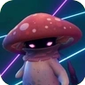
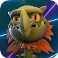
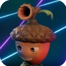
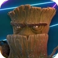
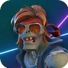
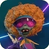
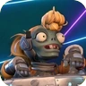
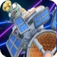
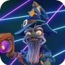

Plantas
Touquinha

Um cogumelo ninja que funciona como um grande canhão de vidro, Suas habilidades são a esfera sombria que deixa ela e seus aliados invisíveis além de deixar os zumbis confusos, sua corrida invisível que ajuda atacar zumbis por trás. E por fim seu kung fungo um ataque de kung fu em àrea que causa um bom dano nos oponentes.
Boca de Dragão

Uma dragão que incendeia seus inimigos com suas bolas de fogo, Tem como habilidades: Uma bola de fogo azul capaz de perseguir o alvo, um voo que acaba em uma cabeçada nos seus oponentes e por fim uma parede de labareda de fogo que bloqueia que queima que chega perto.
Bolota e Carvalho


Bolota e seu amigo carvalho apesar de serem a mesma classe são dois personagens em um. Suas habilidades são: pelo bolota uma bola grudenta que causa dano razoável e um giro para os lados otimo para fuga, pelo carvalho uma mega bola grudenta que causa um dano gigantesco e um tronco de madeira que rola em pedaços causando dano e empurrando zumbis.
Zumbis
Heroi dos Anos 80

Direto dos anos 80 esse zumbi usa um grande arco e flecha para atacar as plantas. Tem como habilidade sua dinamite que serve para ele dar uma fuga nas planta, um passeio em um grande míssel que ataca plantas e por fim mísseis teleguiados que aumentam a precisão de acordo com o número de acertos do arco.
Patinadora Eletrica

Essa patinadora usa ataques eletricos que pode causar dano em àrea. Suas habilidades são: um imã que joga pra longe as plantas que ficam perto dele, um tornado eletrico que explode em contato com as plantas e por fim a patinadora se tranforma numa esfera Eletrica que não sofre dano, otima para fuga.
Cadete e Estação Espacial


A cadete e a estação espacial assim como o bolota e carvalho são dois personagens em um só, as habilidades como cadete são um raio vermelho que causa um bom dano e uma grande queda que pode esmagar a planta embaixo, já como estação você tem um raio que oblitera quem passa embaixo e um potencializador de disparo que aumenta a cadência de tiro da arma primaria da estação.
Bruxo

O bruxo é um zumbi extra que você pode ganhar comprando por moedas ou completando seu mapa de prêmios que ocorre sempre no mês de março tem como suas habilidades: uma poção que bloqueia o pulo e as habilidades das plantas e deixa os zumbis imune por um 3 segundos, um feitiço poderoso que persegue plantas em forma de orbe e por fim ele é capaz de virar uma bola de cristal que sobe na cabeça de um zumbi para atacar lá de cima.